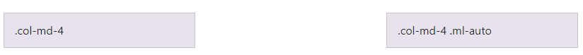
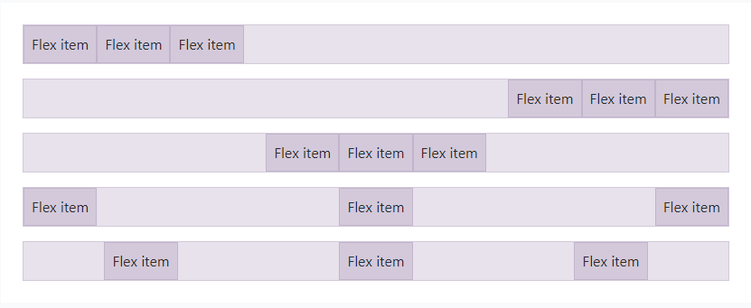
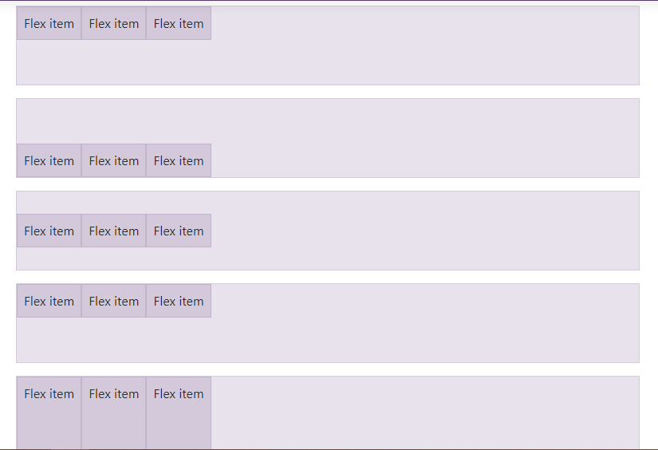
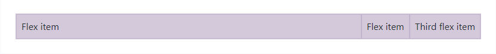
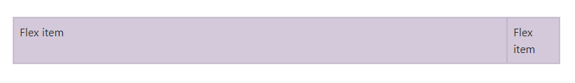
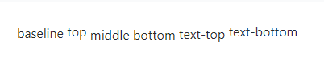
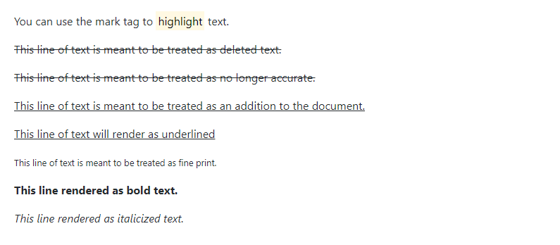
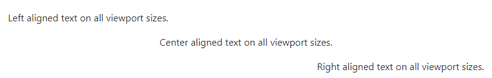
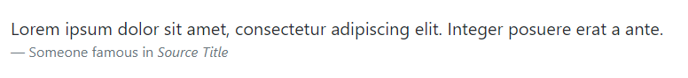

前言
bootstrap 是一个开源的前端框架，主要应用于页面的布局。
官网介绍：
the world’s most popular framework for building responsive, mobile-first sites
同时，它也是移动优先的布局框架。
移动优先，指使用bootstrap开发的页面，不仅能用于web显示，还能用于移动端显示。
CSS布局常用篇
屏幕自适应
使用bootstrap中规范好的CSS样式，能使页面根据屏幕大小自适应，但必须要在head部分加入：
1 | <meta name="viewport" content="width=device-width, initial-scale=1, shrink-to-fit=no"> |
内外边距
可以设置的属性：
m - 设置外边距 marginp - 设置内边距 padding
可以设置的方向：
t - 设置上距 `-topb- 设置下*距-bottoml` - 设置左距 *-leftr - 设置右距 `-rightx- 设置x方向的*距，即左右边距 both-leftand-righty- 设置y方向 both-topand-bottom(none)` - 空则表示设置四个方向
可以设置的大小：
0 - 设置边距为0：for classes that eliminate the margin or padding by setting it to 01 - (by default) 设置 the margin or padding to $spacer .252 - (by default) 设置 the margin or padding to $spacer .53 - (by default) 设置 the margin or padding to $spacer4 - (by default) 设置 the margin or padding to $spacer 1.55 - (by default) 设置 the margin or padding to $spacer * 3auto - 设置自动的外边距 the margin to auto
示例：
mr-3 对应 margin-right: 3 3为不定值，随屏幕大小变化。py-2 对应 padding-top:2;padding-bottom:2;
……
块级元素与行内元素的转换
d-inline-block 将块级元素转换为行内块级元素
栅栏布局
基础
见官网：栅栏布局
配合外边距
1 | <div class="row"> |
效果如下：

偏移
offset-*
1 | <div class="row"> |
规范子元素的flex
d-flex
水平布局
justify-content-*
1 | <div class="d-flex justify-content-start">...</div> |
作用于div子元素。
效果依次为：

垂直布局
align-items-*
1 | <div class="d-flex align-items-start">...</div> |
同样作用于div子元素。
效果依次为：

充满
flex-fill
1 | <div class="d-flex"> |
作用于当前元素，效果是充满父元素。
增长
flex-grow-*
1 | <div class="d-flex bd-highlight"> |
Use .flex-grow-* utilities to toggle a flex item’s ability to grow to fill available space.
将当前元素尽可能地增长，效果如下：

缩短
flex-shrink-*
1 | <div class="d-flex bd-highlight"> |
Use .flex-shrink-* utilities to toggle a flex item’s ability to shrink if necessary.
将当前元素有必要地缩短，效果如下：

作用当前元素
当前元素水平布局
利用外边距可以实现：
1 | <div class="ml-auto" style="width: 200px;"> |
ml-auto 表示 margin-left:auto，效果使得当前元素水平居右。
mx-auto 表示左右外边距都为 auto，效果是水平居中。
当前元素垂直布局
align-*
1 | <span class="align-baseline">baseline</span> |
作用于当前元素，效果如下：

CSS元素规范篇
规范字体
字体样式
1 | <p>You can use the mark tag to <mark>highlight</mark> text.</p> |
效果如下：

包裹字体
text-wrap
1 | <div class="text-wrap" style="width: 6rem;"> |
字体会自动换行，适用于规定宽度的div中的字体。
不包裹字体则是 text-nowarp。
字体过长省略
text-truncate
1 | <div class="row"> |
For longer content, you can add a .text-truncate class to truncate the text with an ellipsis. Requires display: inline-block or display: block.
适用于块级元素中的字体。
字体水平位置
text-*
1 | <p class="text-left">Left aligned text on all viewport sizes.</p> |
效果如下：

规范列表
list-unstyled 列表无黑点
list-inline 行内列表list-inline-item 行内列表中的一项
使用如下：
1 | <ul class="list-inline"> |
规范表格
见官网 表格
CSS组件篇
块引用
blockquote 设置为块引用blockquote-footer 块引用的引脚
1 | <blockquote class="blockquote"> |
效果如下：
